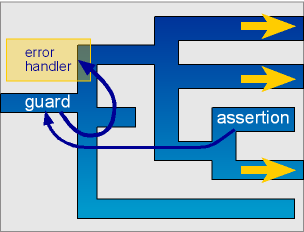

| Error Handling |
 |
 |
 |
C++'s exception handling mechanism is a perfect match for error handling in the framework. Imagine a complete parser as a maze. At each branch, the input dictates where we will turn. Given an erroneous input, we may reach a dead end. If we ever reach one, it would be a waste of time to backtrack from where we came from. Instead, we supply guards in strategic points. Beyond a certain point, we put put parser assertions in places where one is not allowed to go.
The assertions are like springs that catapult us back to the guard. If we ever reach a brick wall given a specific input pattern, everything unwinds quickly and we are thrown right back to the guard. This can be a very effective optimization when used wisely. Right back at the guard, we have a chance to correct the situation, if possible. The following illustration depicts the scenario.
|  |
The parser_error class is the generic parser exception class used by Spirit. This is the base class for all parser exceptions.
template <typename ErrorDescrT, typename IteratorT = char const*>
class parser_error
{
public:
parser_error(IteratorT where, ErrorDescrT descriptor);
IteratorT where;
ErrorDescrT descriptor;
};
The exception holds the iterator position where the error was encountered in its where member variable. In addition to the iterator, parser_error also holds information regarding the error (error descriptor) in its descriptor member variable.
Semantic actions are free to throw parser exceptions when necessary. A utility function throw_ may be called. This function creates and throws a parser_error given an iterator and an error descriptor:
template <typename ErrorDescrT, typename IteratorT>
void throw_(IteratorT where, ErrorDescrT descriptor);
Assertions may be put in places where we don't have any other option other than expect parsing to succeed. If parsing fails, a specific type of exception is thrown.
Before declaring the grammar, we declare some assertion objects. assertion is a template class parameterized by the type of error that will be thrown once the assertion fails. The following assertions are parameterized by a user defined Error enumeration.
enum Errors
{
program_expected,
begin_expected,
end_expected
};
assertion<Errors> expect_program(program_expected);
assertion<Errors> expect_begin(begin_expected);
assertion<Errors> expect_end(end_expected);
The example above uses enums to hold the information regarding the error, we are free to use other types such as integers and strings. For example, assertion<string> accepts a string as its info. It is advisable to use light-weight objects though, after all, error descriptors are usually static. Enums are convenient for error handlers to detect and easily catch since C++ treats enums as unique types.
| Actually, the expression expect_end(str_p("end"))creates an assertive_parser object. An assertive_parser is a parser that throws an exception in response to a parsing failure. The assertive_parser throws a parser_error exception rather than returning an unsuccessful match to signal that the parser failed to match the input. During parsing, parsers are given an iterator of type IteratorT. This is combined with the error descriptor type ErrorDescrT of the assertion (in this case enum Errors). Both are used to create a parser_error<Errors, IteratorT> which is then thrown to signal the exception. |
The predeclared expect_end assertion object may now be used in the grammar as wrappers around parsers. For example:
expect_end(str_p("end"))
This will throw an exception if it fails to see "end" from the input.
The guard is used to catch a specific type of parser_error. guards are typically predeclared just like assertions. Extending our previous example:
guard<Errors> my_guard;
Errors, in this example is the error descriptor type we want to detect. This is the same enum as above. my_guard may now be used in a grammar declaration:
my_guard(p)[error_handler]
where p is an expression that evaluates to a parser. Somewhere inside p, a parser may throw a parser exception. error_handler is the error handler which may be a function or functor compatible with the interface:
error_status<T>
f(ScannerT const& scan, ErrorT error);
Where scan points to the scanner state prior to parsing and error is the error that arose. The handler is allowed to move the scanner position as it sees fit, possibly in an attempt to perform error correction. The handler must then return an error_status<T> object.
| The expression my_guard(expr, error_handler)creates a fallback_parser object. The fallback_parser handles parser_error exceptions of a specific type. Since my_guard is declared as guard<Errors>, the fallback_parser catches Errors specific parser errors: parser_error<Errors, IteratorT>. The class sets up a try block. When an exception is caught, the catch block then calls the error_handler. |
template <typename T = nil_t>
struct error_status
{
enum result_t { fail, retry, accept, rethrow };
error_status(
result_t result = fail,
int length = -1,
T const& value = T());
result_t result;
int length;
T value;
};
Where T is an attribute type compatible with the match attribute of the fallback_parser's subject (defaults to nil_t). The class error_status reports the result of an error handler. This result can be one of:
| error_status result | |||||||
| fail | quit and fail. Return a no_match | retry | attempt error recovery, possibly moving the scanner | accept | force success returning a matching length, moving the scanner appropriately and returning an attribute value | rethrow | rethrows the error |
 See error_handling.cpp for a compilable example. This is part of the Spirit distribution.
See error_handling.cpp for a compilable example. This is part of the Spirit distribution.
|
|
|
Copyright © 1998-2003 Joel de Guzman
Use, modification and distribution is subject to the Boost Software
License, Version 1.0. (See accompanying file LICENSE_1_0.txt or copy at
http://www.boost.org/LICENSE_1_0.txt)